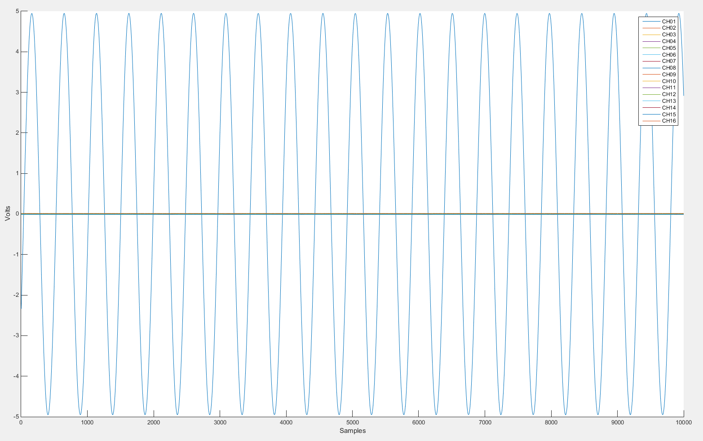

TRANSIENT CAPTURE README
This is the readme document for the MATLAB Transient Capture Interface for ACQ400 products from D-TACQ Solutions.
An example run of transient capture is shown before delving into the constituent parts of the application. This detail should allow you to tweak the application or create your own custom interface.
Click on the hyperlinks in this document to go to detailed views of the constituent functions. The highest level script, transient_commands.m, is used to drive acquisition. The most detailed discussion of the interface to the card is given in transient_commands.m.
Contents
Example Run
- Define your UUT (Unit Under Test) as follows.
global UUT % Without DNS UUT = '10.12.196.103'; % IP address of YOUR product, this is just an example. % With DNS UUT = 'acq2006_014';
>> trans_cap('acq437',10000,0,16,'hard',128000)
acq2006_014New sample rate = ACQ43X_SAMPLE_RATE 128000 Hz
Gains : CH01= 10V CH02= 10V CH03= 10V CH04= 10V CH05= 10V CH06= 10V CH07= 10V CH08= 10V CH09= 10V CH10= 10V CH11= 10V CH12= 10V CH13= 10V CH14= 10V CH15= 10V CH16= 10V
set.site 1 trg=1,0,1 soft_transient 10000 set_arm
...Running Transient Capture ...
...Transient Capture Complete...
...Pulling Channel Data from D-TACQ ACQ...
1
2
3
4
5
6
7
8
9
10
11
12
13
14
15
16
Name Size Bytes Class Attributes
CHx 1x16 1281792 cell
...Data Transfer Complete...
- The data is saved to the workspace as a cell array named CHx.
- A plot is produced of the captured data. An example is shown below.
